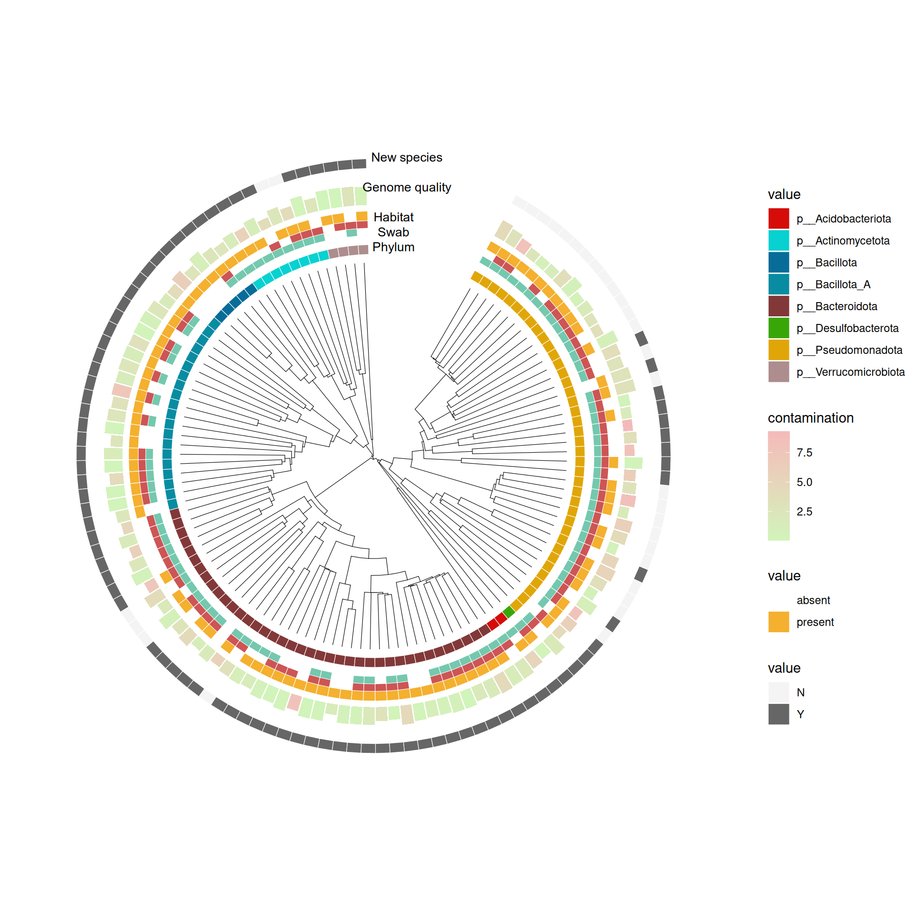
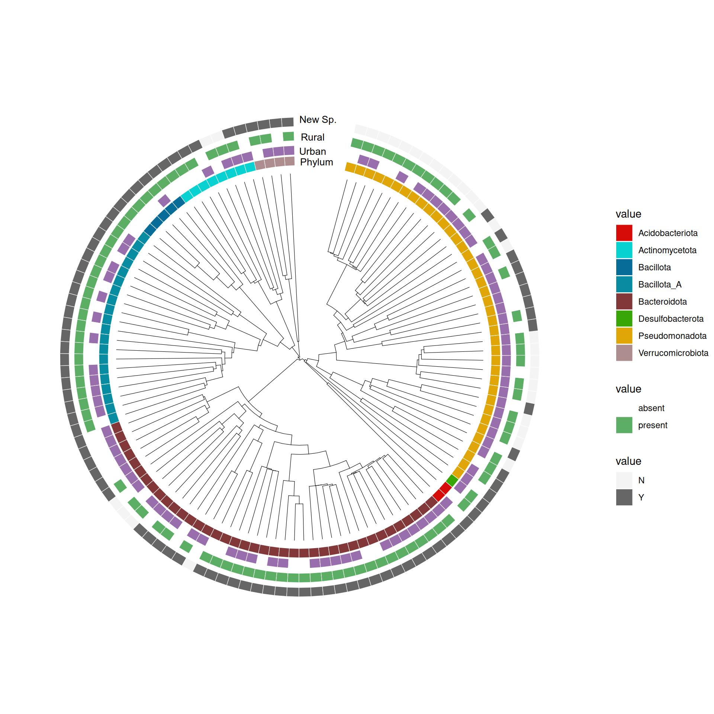
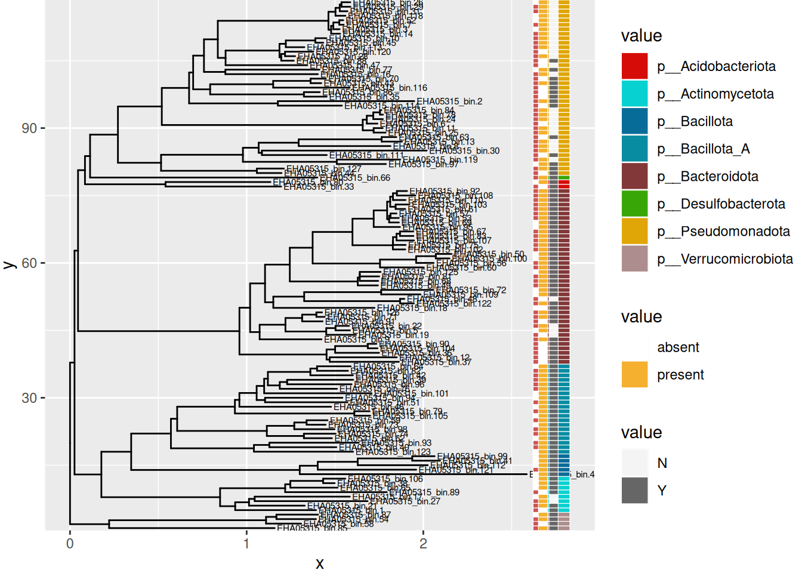
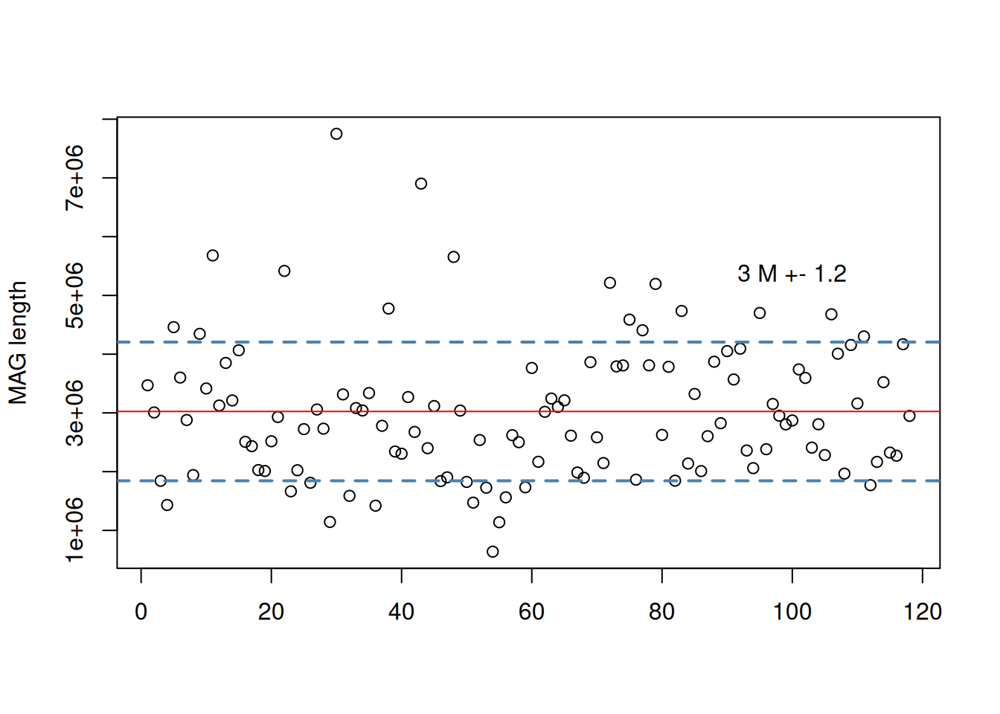
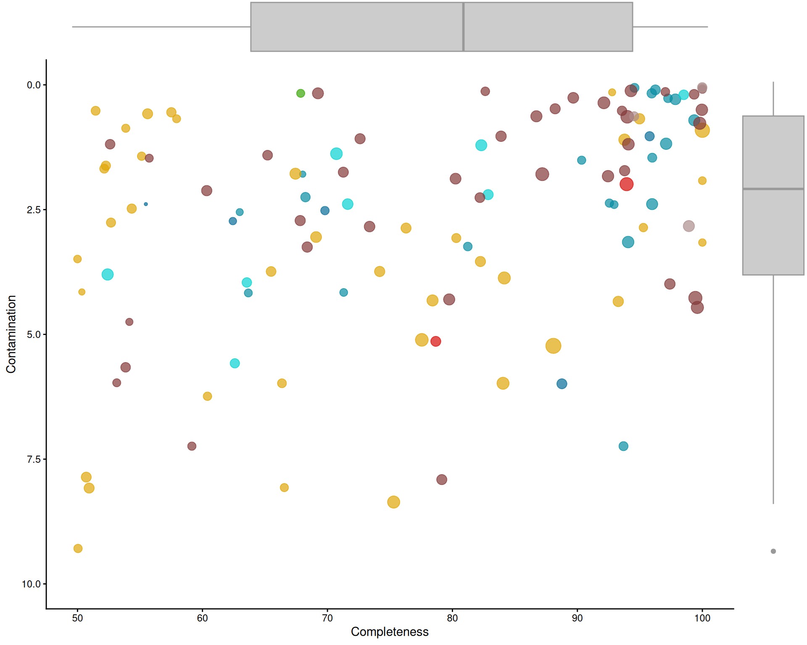
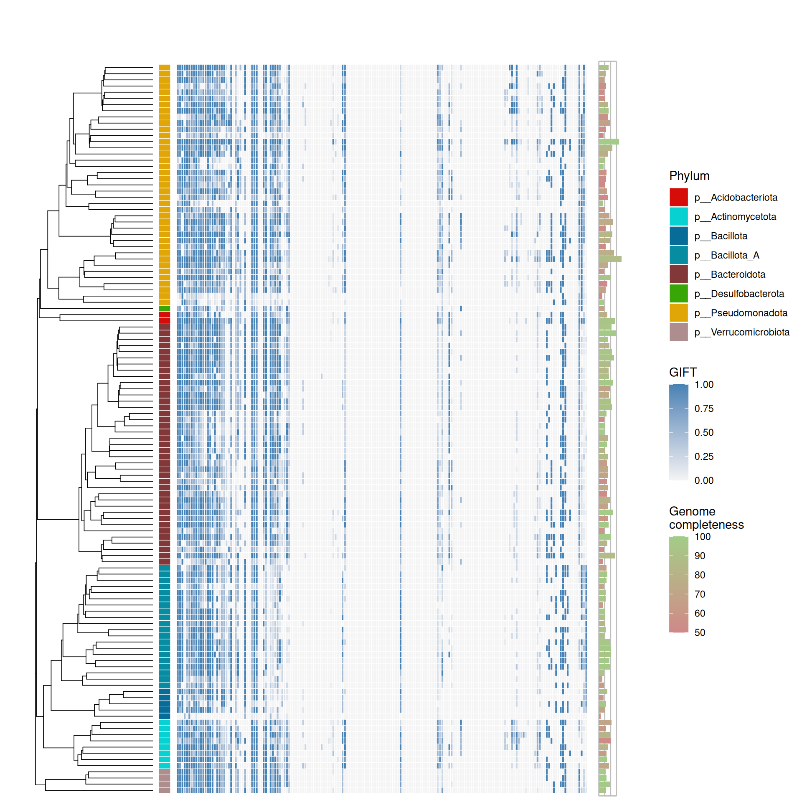
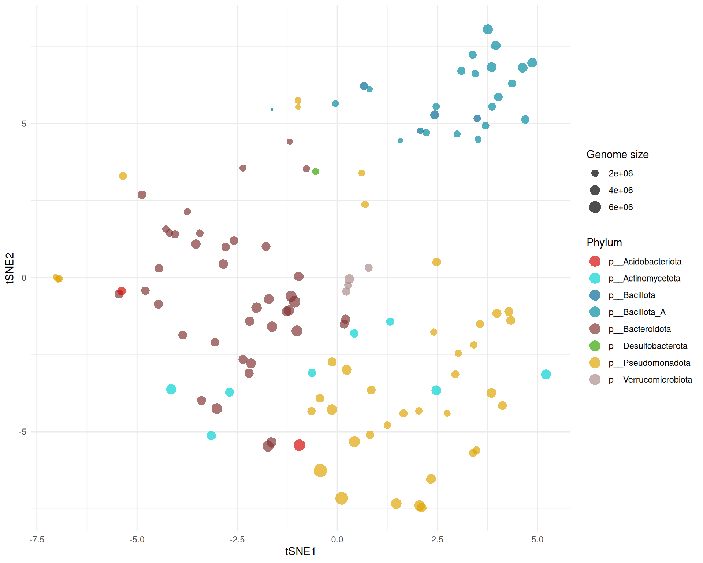
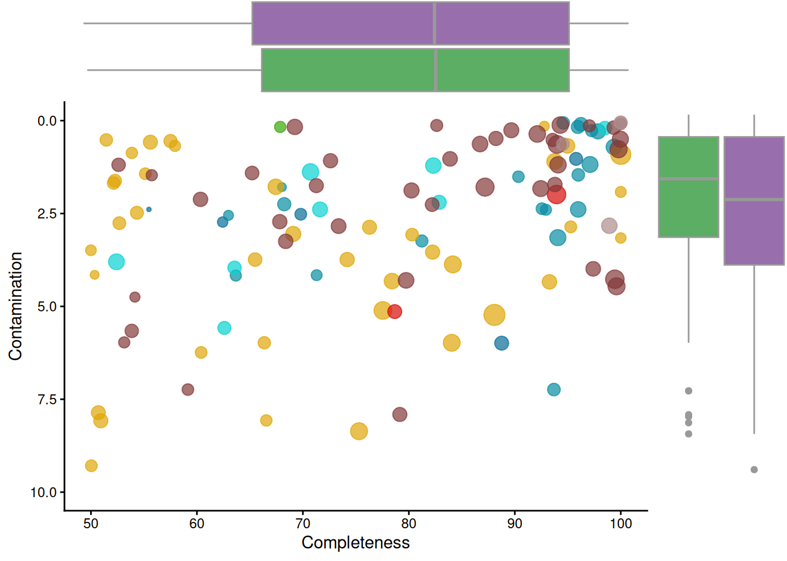

5 MAG catalogue
Load packages
pkgs = readRDS("data/Rpkgs.Rds")
install.packages(setdiff(pkgs, rownames(installed.packages())))
lapply(pkgs, require, character.only = TRUE)[[1]]
[1] TRUE
[[2]]
[1] TRUE
[[3]]
[1] TRUE
[[4]]
[1] TRUE
[[5]]
[1] TRUE
[[6]]
[1] TRUE
[[7]]
[1] TRUE
[[8]]
[1] TRUE
[[9]]
[1] TRUE
[[10]]
[1] TRUE
[[11]]
[1] TRUE
[[12]]
[1] TRUE
[[13]]
[1] TRUE
[[14]]
[1] TRUE
[[15]]
[1] TRUE
[[16]]
[1] TRUE
[[17]]
[1] TRUE
[[18]]
[1] TRUE
[[19]]
[1] TRUE
[[20]]
[1] TRUE
[[21]]
[1] TRUE
[[22]]
[1] TRUE
[[23]]
[1] TRUE
[[24]]
[1] TRUE
[[25]]
[1] TRUE
[[26]]
[1] TRUE
[[27]]
[1] TRUE
[[28]]
[1] TRUE
[[29]]
[1] TRUE
[[30]]
[1] TRUE
[[31]]
[1] TRUE
[[32]]
[1] TRUE
[[33]]
[1] TRUE
[[34]]
[1] TRUE
[[35]]
[1] TRUE
[[36]]
[1] TRUE
[[37]]
[1] TRUE
[[38]]
[1] TRUE
[[39]]
[1] TRUE
[[40]]
[1] TRUE
[[41]]
[1] TRUE
[[42]]
[1] TRUE
[[43]]
[1] TRUE
[[44]]
[1] TRUE
[[45]]
[1] TRUE
[[46]]
[1] TRUE
[[47]]
[1] TRUE
[[48]]
[1] TRUEload("data/data.Rdata")
# keep sample metadatabut rewrite with filters
sample_metadata = sample_metadata3genome_counts_filt <- genome_counts %>%
select(one_of(c("genome",sample_metadata$sample)))%>%
filter(rowSums(. != 0, na.rm = TRUE) > 0) %>%
select_if(~!all(. == 0))
genome_metadata <- genome_metadata %>%
semi_join(., genome_counts_filt, by = "genome") %>%
arrange(match(genome,genome_counts_filt$genome))
genome_tree <- keep.tip(genome_tree, tip=genome_metadata$genome) # keep only MAG tips
#load("data/genome_gifts.Rdata")5.1 Genome phylogeny
Construct a phylogeny for all the MAGs present among your samples. EHI uses its own internal colour scheme to ensure consistency among studies. This is first loaded from GitHub then applied to each genome based on its phylum. If the genome has no existing species match, then it is characterized as a ‘new species’.
Begin the plot by generating a circular tree for the genomes. Then apply a ring for the genomes assigned phylum. Apply another ring indicating the genome quality, with bar height indicating completeness and colour the proportion of contamination. Group specific heatmaps can then also be applied. Additionally, apply a ring indicating if the species is new or not.
# Generate the phylum color heatmap
phylum_heatmap <- read_tsv("https://raw.githubusercontent.com/earthhologenome/EHI_taxonomy_colour/main/ehi_phylum_colors.tsv") %>%
right_join(genome_metadata, by=join_by(phylum == phylum)) %>%
arrange(match(genome, genome_tree$tip.label)) %>%
select(genome,phylum) %>%
mutate(phylum = factor(phylum, levels = unique(phylum))) %>%
column_to_rownames(var = "genome")
# Generate new species table
newspecies_table <- genome_metadata %>%
mutate(newspecies=ifelse(species=="s__","Y","N")) %>%
select(genome,newspecies) %>%
column_to_rownames(var = "genome")
# study specific query
swabmap <- genome_counts_filt %>%
pivot_longer(!genome,names_to="sample",values_to="abundance") %>%
left_join(sample_metadata,by="sample") %>%
group_by(genome,swab) %>%
summarise(presence=ifelse(sum(abundance[swab == "EHI"]) > 0, "present", "absent")) %>%
filter(swab == "EHI") %>%
select(genome,presence) %>%
column_to_rownames(var="genome")
# study specific query
urbanmap <- genome_counts_filt %>%
pivot_longer(!genome,names_to="sample",values_to="abundance") %>%
left_join(sample_metadata,by="sample") %>%
group_by(genome,habitat) %>%
summarise(presence=ifelse(sum(abundance[habitat == "urban"]) > 0, "present", "absent")) %>%
filter(habitat == "urban") %>%
select(genome,presence) %>%
column_to_rownames(var="genome")
# study specific query
ruralnmap <- genome_counts_filt %>%
pivot_longer(!genome,names_to="sample",values_to="abundance") %>%
left_join(sample_metadata,by="sample") %>%
group_by(genome,habitat) %>%
summarise(presence=ifelse(sum(abundance[habitat == "rural"]) > 0, "present", "absent")) %>%
filter(habitat == "rural") %>%
select(genome,presence) %>%
column_to_rownames(var="genome")# Generate basal tree
circular_tree <- force.ultrametric(genome_tree, method="extend") %>% # extend to ultrametric for the sake of visualisation
ggtree(., layout="fan", open.angle=10, size=0.2)***************************************************************
* Note: *
* force.ultrametric does not include a formal method to *
* ultrametricize a tree & should only be used to coerce *
* a phylogeny that fails is.ultrametric due to rounding -- *
* not as a substitute for formal rate-smoothing methods. *
***************************************************************# Add phylum ring
circular_tree <- gheatmap(circular_tree, phylum_heatmap, offset=0.05, width=0.05, colnames=FALSE) +
scale_fill_manual(values=phylum_colors) +
theme(legend.position = "none", plot.margin = margin(0, 0, 0, 0), panel.margin = margin(0, 0, 0, 0))
# Flush color scale to enable a new color scheme in the next ring
circular_tree <- circular_tree + new_scale_fill()
# Add completeness ring
circular_tree <- circular_tree +
new_scale_fill() +
scale_fill_gradient(low = "#d1f4ba", high = "#f4baba") +
geom_fruit(
data=genome_metadata,
geom=geom_bar,
mapping = aes(x=completeness, y=genome, fill=contamination),
offset = 0.3,
pwidth = 0.1,
orientation="y",
stat="identity")
# Add genome-size ring
circular_tree <- circular_tree + new_scale_fill()
circular_tree <- gheatmap(circular_tree, swabmap, offset=0.3, width=0.05, colnames=FALSE) +
scale_fill_manual(values=c("#ffffff","#74C8AE")) +
theme(legend.position = "none", plot.margin = margin(0, 0, 0, 0), panel.margin = margin(0, 0, 0, 0)) +
new_scale_fill()
circular_tree <- gheatmap(circular_tree, urbanmap, offset=0.4, width=0.05, colnames=FALSE) +
scale_fill_manual(values=c("#ffffff","#CD5555")) +
theme(legend.position = "none", plot.margin = margin(0, 0, 0, 0), panel.margin = margin(0, 0, 0, 0)) +
new_scale_fill()
circular_tree <- gheatmap(circular_tree, ruralnmap, offset=0.5, width=0.05, colnames=FALSE) +
scale_fill_manual(values=c("#ffffff","#F4B02E")) +
theme(legend.position = "none", plot.margin = margin(0, 0, 0, 0), panel.margin = margin(0, 0, 0, 0)) +
new_scale_fill()
circular_tree <- gheatmap(circular_tree, newspecies_table, offset=1.2, width=0.05, colnames=FALSE) +
scale_fill_manual(values=c("#f4f4f4","#666666"))
theme(legend.position = "none", plot.margin = margin(0, 0, 0, 0), panel.margin = margin(0, 0, 0, 0))<theme> List of 3
$ legend.position: chr "none"
$ plot.margin : <ggplot2::margin> num [1:4] 0 0 0 0
$ panel.margin : <ggplot2::margin> num [1:4] 0 0 0 0
@ complete: logi FALSE
@ validate: logi TRUE# Add text
circular_tree <- circular_tree +
annotate('text', x=2.8, y=0, label=' Phylum', family='arial', size=3.5) +
annotate('text', x=3.0, y=0, label=' Swab', family='arial', size=3.5) +
annotate('text', x=3.2, y=0, label=' Habitat', family='arial', size=3.5) +
annotate('text', x=3.6, y=0, label=' Genome quality', family='arial', size=3.5) +
annotate('text', x=4.0, y=0, label=' New species', family='arial', size=3.5)
#Plot circular tree
circular_tree %>% open_tree(30) %>% rotate_tree(90)
ggsave(
"figure/circular_tree.png",
plot = last_plot(),
scale = 1,
width = 200,
height = 200,
units = c("mm"),
dpi = 300,
limitsize = TRUE)# revise phylum names for print
phylum_colors_rm = phylum_colors
names(phylum_colors_rm) = str_remove(names(phylum_colors), "p__")
# Generate basal tree
circular_tree <- force.ultrametric(genome_tree, method="extend") %>% # extend to ultrametric for the sake of visualisation
ggtree(., layout="fan", open.angle=10, size=0.2)***************************************************************
* Note: *
* force.ultrametric does not include a formal method to *
* ultrametricize a tree & should only be used to coerce *
* a phylogeny that fails is.ultrametric due to rounding -- *
* not as a substitute for formal rate-smoothing methods. *
***************************************************************# Add phylum ring
circular_tree <- gheatmap(circular_tree, phylum_heatmap %>%
mutate(across(c('phylum'), as.character)) %>%
mutate(across(c('phylum'), substr, 4, nchar(phylum))) %>%
mutate_if(is.character, as.factor),
offset=0.05, width=0.05, colnames=FALSE) +
scale_fill_manual(values=phylum_colors_rm) +
theme(legend.position = "none", plot.margin = margin(0, 0, 0, 0), panel.margin = margin(0, 0, 0, 0))
# Flush color scale to enable a new color scheme in the next ring
circular_tree <- circular_tree + new_scale_fill()
# Add genome-size ring
circular_tree <- circular_tree + new_scale_fill()
circular_tree <- gheatmap(circular_tree, urbanmap, offset=0.2, width=0.05, colnames=FALSE) +
scale_fill_manual(values=c("#ffffff","#986eac")) +
theme(legend.position = "none", plot.margin = margin(0, 0, 0, 0), panel.margin = margin(0, 0, 0, 0)) +
new_scale_fill()
circular_tree <- gheatmap(circular_tree, ruralnmap, offset=0.4, width=0.05, colnames=FALSE) +
scale_fill_manual(values=c("#ffffff","#5bae63")) +
theme(legend.position = "none", plot.margin = margin(0, 0, 0, 0), panel.margin = margin(0, 0, 0, 0)) +
new_scale_fill()
circular_tree <- gheatmap(circular_tree, newspecies_table, offset=0.6, width=0.05, colnames=FALSE) +
scale_fill_manual(values=c("#f4f4f4","#666666"))
theme(legend.position = "none", plot.margin = margin(0, 0, 0, 0), panel.margin = margin(0, 0, 0, 0))<theme> List of 3
$ legend.position: chr "none"
$ plot.margin : <ggplot2::margin> num [1:4] 0 0 0 0
$ panel.margin : <ggplot2::margin> num [1:4] 0 0 0 0
@ complete: logi FALSE
@ validate: logi TRUE# Add text
circular_tree <- circular_tree +
annotate('text', x=2.75, y=0, label=' Phylum', family='arial', size=3.5) +
annotate('text', x=2.9, y=0, label=' Urban', family='arial', size=3.5) +
annotate('text', x=3.10, y=0, label=' Rural', family='arial', size=3.5) +
annotate('text', x=3.35, y=0, label=' New Sp.', family='arial', size=3.5)
#Plot circular tree
circular_tree %>% open_tree(15) %>% rotate_tree(90)
ggsave(
"figure/circular_tree_simplified.png",
plot = last_plot(),
scale = 1,
width = 200,
height = 200,
units = c("mm"),
dpi = 300,
limitsize = TRUE)5.1.0.1 Summarize phylum richness
# merge phylum and new species
df_tree = merge( phylum_heatmap,newspecies_table, by = 0, all = TRUE) %>%
remove_rownames %>%
column_to_rownames(var="Row.names")
# merge urban presence
df_tree = merge( df_tree,urbanmap, by = 0, all = TRUE) %>%
remove_rownames %>%
column_to_rownames(var="Row.names")
# merge rural presence
df_tree = merge( df_tree,ruralnmap, by = 0, all = TRUE) %>%
remove_rownames %>%
column_to_rownames(var="Row.names")
# number of MAGs per phylum
df_treestats =
as.data.frame(table(df_tree$phylum)) %>%
remove_rownames %>%
column_to_rownames(var="Var1")
# proportion of each phylum
df_treestats =
merge(
df_treestats,
as.data.frame(table(df_tree$phylum)/nrow(df_tree) * 100) %>%
remove_rownames %>%
column_to_rownames(var="Var1"),
by = 0, all = TRUE) %>%
remove_rownames %>%
column_to_rownames(var="Row.names")
# number of classes, order, and families
df_treestats =
merge(df_treestats,
genome_metadata %>%
group_by(phylum) %>%
summarize(class = n_distinct(class)) %>%
remove_rownames %>%
column_to_rownames(var="phylum"),
by = 0, all = TRUE) %>%
remove_rownames %>%
column_to_rownames(var="Row.names")
df_treestats =
merge(df_treestats,
genome_metadata %>%
group_by(phylum) %>%
summarize(order = n_distinct(order)) %>%
remove_rownames %>%
column_to_rownames(var="phylum"),
by = 0, all = TRUE) %>%
remove_rownames %>%
column_to_rownames(var="Row.names")
df_treestats =
merge(df_treestats,
genome_metadata %>%
group_by(phylum) %>%
summarize(family = n_distinct(family)) %>%
remove_rownames %>%
column_to_rownames(var="phylum"),
by = 0, all = TRUE) %>%
remove_rownames %>%
column_to_rownames(var="Row.names")
# new species per phylum
df_treestats =
merge(df_treestats,
df_tree %>%
group_by(phylum) %>%
summarise(New_species = mean(newspecies == 'Y')) %>%
remove_rownames %>%
column_to_rownames(var="phylum"),
by = 0, all = TRUE) %>%
remove_rownames %>%
column_to_rownames(var="Row.names")
signif( df_treestats, 2) Freq.x Freq.y class order family New_species
p__Acidobacteriota 2 1.70 1 2 2 1.00
p__Actinomycetota 8 6.80 1 2 6 0.75
p__Bacillota 5 4.20 1 2 3 1.00
p__Bacillota_A 20 17.00 1 3 7 1.00
p__Bacteroidota 39 33.00 1 4 10 0.90
p__Desulfobacterota 1 0.85 1 1 1 1.00
p__Pseudomonadota 39 33.00 2 12 16 0.36
p__Verrucomicrobiota 4 3.40 2 2 2 1.005.1.0.2 Identify brach taxonomy
tmp_tree =
ggplot(genome_tree) +
geom_tree() +
geom_tiplab(size = 2)
tmp_tree = gheatmap(tmp_tree, phylum_heatmap, offset=0.05, width=0.05, colnames=FALSE) +
scale_fill_manual(values=phylum_colors) +
theme(legend.position = "none", plot.margin = margin(0, 0, 0, 0), panel.margin = margin(0, 0, 0, 0))Scale for fill is already present.
Adding another scale for fill, which will replace the existing
scale.tmp_tree = tmp_tree + new_scale_fill()
tmp_tree = gheatmap(tmp_tree, urbanmap, offset=0.01, width=0.02, colnames=FALSE) +
scale_fill_manual(values=c("#ffffff","#CD5555")) +
theme(legend.position = "none", plot.margin = margin(0, 0, 0, 0), panel.margin = margin(0, 0, 0, 0)) +
new_scale_fill()Scale for y is already present.
Adding another scale for y, which will replace the existing
scale.
Scale for fill is already present.
Adding another scale for fill, which will replace the existing
scale.tmp_tree = gheatmap(tmp_tree, ruralnmap, tmp_tree, urbanmap, offset=0.04, width=0.02, colnames=FALSE) +
scale_fill_manual(values=c("#ffffff","#F4B02E")) +
theme(legend.position = "none", plot.margin = margin(0, 0, 0, 0), panel.margin = margin(0, 0, 0, 0)) +
new_scale_fill()Scale for y is already present.
Adding another scale for y, which will replace the existing
scale.
Scale for fill is already present.
Adding another scale for fill, which will replace the existing
scale.tmp_tree = gheatmap(tmp_tree, newspecies_table, offset=0.1, width=0.02, colnames=FALSE) +
scale_fill_manual(values=c("#f4f4f4","#666666"))Scale for y is already present.
Adding another scale for y, which will replace the existing
scale.
Scale for fill is already present.
Adding another scale for fill, which will replace the existing
scale. theme(legend.position = "none", plot.margin = margin(0, 0, 0, 0), panel.margin = margin(0, 0, 0, 0))<theme> List of 3
$ legend.position: chr "none"
$ plot.margin : <ggplot2::margin> num [1:4] 0 0 0 0
$ panel.margin : <ggplot2::margin> num [1:4] 0 0 0 0
@ complete: logi FALSE
@ validate: logi TRUEWarning in plot_theme(plot): The `panel.margin` theme element is not defined in the element
hierarchy.
genome_metadata[
match(genome_metadata$genome,tmp_tree$data$label), # match tip label to genome name
c("genome","phylum","family")] %>% # return class
arrange(phylum, family) genome phylum family
1 EHA05315_bin.80 p__Acidobacteriota f__Acidobacteriaceae
2 EHA05315_bin.33 p__Acidobacteriota f__UBA7541
3 EHA05315_bin.21 p__Actinomycetota f__Dermabacteraceae
4 EHA05315_bin.1 p__Actinomycetota f__Dermatophilaceae
5 EHA05315_bin.27 p__Actinomycetota f__Microbacteriaceae
6 EHA05315_bin.17 p__Actinomycetota f__Micrococcaceae
7 EHA05315_bin.89 p__Actinomycetota f__Mycobacteriaceae
8 EHA05315_bin.106 p__Actinomycetota f__Pseudonocardiaceae
9 EHA05315_bin.38 p__Actinomycetota f__Pseudonocardiaceae
10 EHA05315_bin.65 p__Actinomycetota f__Pseudonocardiaceae
11 EHA05315_bin.121 p__Bacillota f__Coprobacillaceae
12 EHA05315_bin.41 p__Bacillota f__Erysipelotrichaceae
13 EHA05315_bin.112 p__Bacillota f__Erysipelotrichaceae
14 EHA05315_bin.99 p__Bacillota f__Erysipelotrichaceae
15 EHA05315_bin.4 p__Bacillota f__Mycoplasmoidaceae
16 EHA05315_bin.94 p__Bacillota_A f__Acutalibacteraceae
17 EHA05315_bin.51 p__Bacillota_A f__Acutalibacteraceae
18 EHA05315_bin.123 p__Bacillota_A f__CAG-917
19 EHA05315_bin.62 p__Bacillota_A f__Lachnospiraceae
20 EHA05315_bin.59 p__Bacillota_A f__Lachnospiraceae
21 EHA05315_bin.74 p__Bacillota_A f__Lachnospiraceae
22 EHA05315_bin.98 p__Bacillota_A f__Lachnospiraceae
23 EHA05315_bin.73 p__Bacillota_A f__Lachnospiraceae
24 EHA05315_bin.79 p__Bacillota_A f__Oscillospiraceae
25 EHA05315_bin.105 p__Bacillota_A f__Oscillospiraceae
26 EHA05315_bin.96 p__Bacillota_A f__Ruminococcaceae
27 EHA05315_bin.82 p__Bacillota_A f__Ruminococcaceae
28 EHA05315_bin.76 p__Bacillota_A f__Ruminococcaceae
29 EHA05315_bin.42 p__Bacillota_A f__Ruminococcaceae
30 EHA05315_bin.64 p__Bacillota_A f__Ruminococcaceae
31 EHA05315_bin.101 p__Bacillota_A f__Ruminococcaceae
32 EHA05315_bin.39 p__Bacillota_A f__Ruminococcaceae
33 EHA05315_bin.46 p__Bacillota_A f__SIG519
34 EHA05315_bin.40 p__Bacillota_A f__UBA3700
35 EHA05315_bin.93 p__Bacillota_A f__UBA3700
36 EHA05315_bin.9 p__Bacteroidota f__
37 EHA05315_bin.108 p__Bacteroidota f__Bacteroidaceae
38 EHA05315_bin.61 p__Bacteroidota f__Bacteroidaceae
39 EHA05315_bin.53 p__Bacteroidota f__Bacteroidaceae
40 EHA05315_bin.95 p__Bacteroidota f__Bacteroidaceae
41 EHA05315_bin.92 p__Bacteroidota f__Bacteroidaceae
42 EHA05315_bin.57 p__Bacteroidota f__Bacteroidaceae
43 EHA05315_bin.110 p__Bacteroidota f__Bacteroidaceae
44 EHA05315_bin.69 p__Bacteroidota f__Bacteroidaceae
45 EHA05315_bin.103 p__Bacteroidota f__Bacteroidaceae
46 EHA05315_bin.104 p__Bacteroidota f__Chitinophagaceae
47 EHA05315_bin.37 p__Bacteroidota f__Chitinophagaceae
48 EHA05315_bin.90 p__Bacteroidota f__Chitinophagaceae
49 EHA05315_bin.36 p__Bacteroidota f__Chitinophagaceae
50 EHA05315_bin.12 p__Bacteroidota f__Chitinophagaceae
51 EHA05315_bin.18 p__Bacteroidota f__Crocinitomicaceae
52 EHA05315_bin.72 p__Bacteroidota f__Flavobacteriaceae
53 EHA05315_bin.109 p__Bacteroidota f__Flavobacteriaceae
54 EHA05315_bin.68 p__Bacteroidota f__Marinifilaceae
55 EHA05315_bin.125 p__Bacteroidota f__Marinifilaceae
56 EHA05315_bin.49 p__Bacteroidota f__Marinifilaceae
57 EHA05315_bin.81 p__Bacteroidota f__Marinifilaceae
58 EHA05315_bin.50 p__Bacteroidota f__Rikenellaceae
59 EHA05315_bin.60 p__Bacteroidota f__Rikenellaceae
60 EHA05315_bin.100 p__Bacteroidota f__Rikenellaceae
61 EHA05315_bin.56 p__Bacteroidota f__Rikenellaceae
62 EHA05315_bin.5 p__Bacteroidota f__Sphingobacteriaceae
63 EHA05315_bin.126 p__Bacteroidota f__Sphingobacteriaceae
64 EHA05315_bin.71 p__Bacteroidota f__Sphingobacteriaceae
65 EHA05315_bin.19 p__Bacteroidota f__Sphingobacteriaceae
66 EHA05315_bin.22 p__Bacteroidota f__Sphingobacteriaceae
67 EHA05315_bin.91 p__Bacteroidota f__Sphingobacteriaceae
68 EHA05315_bin.75 p__Bacteroidota f__Tannerellaceae
69 EHA05315_bin.67 p__Bacteroidota f__Tannerellaceae
70 EHA05315_bin.102 p__Bacteroidota f__Tannerellaceae
71 EHA05315_bin.107 p__Bacteroidota f__Tannerellaceae
72 EHA05315_bin.83 p__Bacteroidota f__Tannerellaceae
73 EHA05315_bin.122 p__Bacteroidota f__Weeksellaceae
74 EHA05315_bin.48 p__Bacteroidota f__Weeksellaceae
75 EHA05315_bin.66 p__Desulfobacterota f__Desulfovibrionaceae
76 EHA05315_bin.2 p__Pseudomonadota f__2013Ark19i
77 EHA05315_bin.114 p__Pseudomonadota f__Burkholderiaceae
78 EHA05315_bin.127 p__Pseudomonadota f__CAG-239
79 EHA05315_bin.44 p__Pseudomonadota f__CAG-239
80 EHA05315_bin.47 p__Pseudomonadota f__Cellvibrionaceae
81 EHA05315_bin.77 p__Pseudomonadota f__DSM-16500
82 EHA05315_bin.16 p__Pseudomonadota f__Diplorickettsiaceae
83 EHA05315_bin.25 p__Pseudomonadota f__Enterobacteriaceae
84 EHA05315_bin.6 p__Pseudomonadota f__Enterobacteriaceae
85 EHA05315_bin.24 p__Pseudomonadota f__Enterobacteriaceae
86 EHA05315_bin.78 p__Pseudomonadota f__Enterobacteriaceae
87 EHA05315_bin.84 p__Pseudomonadota f__Enterobacteriaceae
88 EHA05315_bin.11 p__Pseudomonadota f__Enterobacteriaceae
89 EHA05315_bin.111 p__Pseudomonadota f__JACAEB01
90 EHA05315_bin.7 p__Pseudomonadota f__Moraxellaceae
91 EHA05315_bin.52 p__Pseudomonadota f__Moraxellaceae
92 EHA05315_bin.31 p__Pseudomonadota f__Moraxellaceae
93 EHA05315_bin.29 p__Pseudomonadota f__Moraxellaceae
94 EHA05315_bin.118 p__Pseudomonadota f__Moraxellaceae
95 EHA05315_bin.14 p__Pseudomonadota f__Moraxellaceae
96 EHA05315_bin.3 p__Pseudomonadota f__Moraxellaceae
97 EHA05315_bin.26 p__Pseudomonadota f__Moraxellaceae
98 EHA05315_bin.113 p__Pseudomonadota f__Pseudomonadaceae
99 EHA05315_bin.28 p__Pseudomonadota f__Pseudomonadaceae
100 EHA05315_bin.45 p__Pseudomonadota f__Pseudomonadaceae
101 EHA05315_bin.88 p__Pseudomonadota f__Pseudomonadaceae
102 EHA05315_bin.120 p__Pseudomonadota f__Pseudomonadaceae
103 EHA05315_bin.10 p__Pseudomonadota f__Pseudomonadaceae
104 EHA05315_bin.8 p__Pseudomonadota f__Rhizobiaceae
105 EHA05315_bin.70 p__Pseudomonadota f__Rhodanobacteraceae
106 EHA05315_bin.43 p__Pseudomonadota f__Rhodanobacteraceae
107 EHA05315_bin.116 p__Pseudomonadota f__Rhodanobacteraceae
108 EHA05315_bin.30 p__Pseudomonadota f__Rhodobacteraceae
109 EHA05315_bin.119 p__Pseudomonadota f__Sphingomonadaceae
110 EHA05315_bin.97 p__Pseudomonadota f__Sphingomonadaceae
111 EHA05315_bin.35 p__Pseudomonadota f__Steroidobacteraceae
112 EHA05315_bin.86 p__Pseudomonadota f__Steroidobacteraceae
113 EHA05315_bin.13 p__Pseudomonadota f__Xanthobacteraceae
114 EHA05315_bin.63 p__Pseudomonadota f__Xanthobacteraceae
115 EHA05315_bin.85 p__Verrucomicrobiota f__
116 EHA05315_bin.58 p__Verrucomicrobiota f__Akkermansiaceae
117 EHA05315_bin.54 p__Verrucomicrobiota f__Akkermansiaceae
118 EHA05315_bin.87 p__Verrucomicrobiota f__Akkermansiaceae5.1.0.3 Habitat exclusive families
# urban presence by family
urban_pres =
merge(
genome_counts_filt %>%
pivot_longer(!genome,names_to="sample",values_to="abundance") %>%
left_join(sample_metadata,by="sample") %>%
group_by(genome,habitat) %>%
summarise(presence=ifelse(sum(abundance[habitat == "urban"]) > 0, "present", "absent")) %>%
filter(habitat == "urban") %>%
column_to_rownames(var="genome"),
genome_metadata %>%
remove_rownames %>%
column_to_rownames(var="genome"),
by = 0, all = TRUE) %>%
select(family,presence) %>%
group_by(family) %>%
summarise(present = sum(presence == 'present', na.rm = TRUE),
absent = sum(presence == 'absent', na.rm = TRUE),
.groups = "drop") %>%
mutate(urban = signif(present / (present + absent),2))`summarise()` has regrouped the output.
ℹ Summaries were computed grouped by genome and habitat.
ℹ Output is grouped by genome.
ℹ Use `summarise(.groups = "drop_last")` to silence this
message.
ℹ Use `summarise(.by = c(genome, habitat))` for per-operation
grouping (`?dplyr::dplyr_by`) instead.# rural presence by family
rural_pres =
merge(
genome_counts_filt %>%
pivot_longer(!genome,names_to="sample",values_to="abundance") %>%
left_join(sample_metadata,by="sample") %>%
group_by(genome,habitat) %>%
summarise(presence=ifelse(sum(abundance[habitat == "rural"]) > 0, "present", "absent")) %>%
filter(habitat == "rural") %>%
column_to_rownames(var="genome"),
genome_metadata %>%
remove_rownames %>%
column_to_rownames(var="genome"),
by = 0, all = TRUE) %>%
select(family,presence) %>%
group_by(family) %>%
summarise(present = sum(presence == 'present', na.rm = TRUE),
absent = sum(presence == 'absent', na.rm = TRUE),
.groups = "drop") %>%
mutate(rural = signif(present / (present + absent),2))`summarise()` has regrouped the output.
ℹ Summaries were computed grouped by genome and habitat.
ℹ Output is grouped by genome.
ℹ Use `summarise(.groups = "drop_last")` to silence this
message.
ℹ Use `summarise(.by = c(genome, habitat))` for per-operation
grouping (`?dplyr::dplyr_by`) instead.UrbRur_pres =
merge(urban_pres,rural_pres, by = 'family') %>%
mutate(exlusion = abs(urban - rural) >= 0.75) %>%
mutate(n_fam = (present.x + absent.x))
UrbRur_pres[UrbRur_pres$exlusion == TRUE & UrbRur_pres$n_fam > 1,] family present.x absent.x urban present.y absent.y rural
11 f__Chitinophagaceae 5 0 1 0 5 0
20 f__Erysipelotrichaceae 0 3 0 3 0 1
21 f__Flavobacteriaceae 0 2 0 2 0 1
32 f__Pseudonocardiaceae 0 3 0 3 0 1
41 f__Steroidobacteraceae 2 0 1 0 2 0
exlusion n_fam
11 TRUE 5
20 TRUE 3
21 TRUE 2
32 TRUE 3
41 TRUE 2(p)Bacteroidota (f)Chitinophagaceae is observed exclusively among samples from urban habitats.
(p)Actinomycetota (f)Pseudonocardiaceae and (p)Bacillota (f)Erysipelotrichaceae are two Families with several identified taxa observed exclusively among samples from rural habitats.
5.2 Taxonomy overview
tax_mag <-genome_metadata %>%
group_by(phylum) %>%
summarise(mag_n=n())
tax_mag %>%
mutate(percetage_mag=round(mag_n*100/sum(mag_n), 2)) %>%
arrange(-percetage_mag) %>%
tt()| phylum | mag_n | percetage_mag |
|---|---|---|
| p__Bacteroidota | 39 | 33.05 |
| p__Pseudomonadota | 39 | 33.05 |
| p__Bacillota_A | 20 | 16.95 |
| p__Actinomycetota | 8 | 6.78 |
| p__Bacillota | 5 | 4.24 |
| p__Verrucomicrobiota | 4 | 3.39 |
| p__Acidobacteriota | 2 | 1.69 |
| p__Desulfobacterota | 1 | 0.85 |
5.3 Mag size (MB)
Mags average size (MB)
| Average_corrected_size |
|---|
| 3907040 |
Minimum Mags size (MB)
| genome | domain | phylum | class | order | family | genus | species | completeness | contamination | length | N50 | corrected_size |
|---|---|---|---|---|---|---|---|---|---|---|---|---|
| EHA05315_bin.4 | d__Bacteria | p__Bacillota | c__Bacilli | o__Mycoplasmatales | f__Mycoplasmoidaceae | g__Mycoplasma_N | s__ | 55.47 | 2.39 | 638454 | 416 | 1150990 |
Maximum Mags size (MB)
| genome | domain | phylum | class | order | family | genus | species | completeness | contamination | length | N50 | corrected_size |
|---|---|---|---|---|---|---|---|---|---|---|---|---|
| EHA05315_bin.13 | d__Bacteria | p__Pseudomonadota | c__Alphaproteobacteria | o__Rhizobiales | f__Xanthobacteraceae | g__Bradyrhizobium | s__Bradyrhizobium sp003020075 | 88.08 | 5.23 | 7750878 | 1046 | 8799816 |
Mags arrange by size (MB)
genome domain phylum class
1 EHA05315_bin.13 d__Bacteria p__Pseudomonadota c__Alphaproteobacteria
2 EHA05315_bin.89 d__Bacteria p__Actinomycetota c__Actinomycetia
3 EHA05315_bin.28 d__Bacteria p__Pseudomonadota c__Gammaproteobacteria
4 EHA05315_bin.63 d__Bacteria p__Pseudomonadota c__Alphaproteobacteria
5 EHA05315_bin.78 d__Bacteria p__Pseudomonadota c__Gammaproteobacteria
6 EHA05315_bin.12 d__Bacteria p__Bacteroidota c__Bacteroidia
7 EHA05315_bin.106 d__Bacteria p__Actinomycetota c__Actinomycetia
8 EHA05315_bin.33 d__Bacteria p__Acidobacteriota c__Terriglobia
9 EHA05315_bin.35 d__Bacteria p__Pseudomonadota c__Gammaproteobacteria
10 EHA05315_bin.119 d__Bacteria p__Pseudomonadota c__Alphaproteobacteria
11 EHA05315_bin.108 d__Bacteria p__Bacteroidota c__Bacteroidia
12 EHA05315_bin.45 d__Bacteria p__Pseudomonadota c__Gammaproteobacteria
13 EHA05315_bin.88 d__Bacteria p__Pseudomonadota c__Gammaproteobacteria
14 EHA05315_bin.57 d__Bacteria p__Bacteroidota c__Bacteroidia
15 EHA05315_bin.6 d__Bacteria p__Pseudomonadota c__Gammaproteobacteria
16 EHA05315_bin.10 d__Bacteria p__Pseudomonadota c__Gammaproteobacteria
17 EHA05315_bin.83 d__Bacteria p__Bacteroidota c__Bacteroidia
18 EHA05315_bin.5 d__Bacteria p__Bacteroidota c__Bacteroidia
19 EHA05315_bin.84 d__Bacteria p__Pseudomonadota c__Gammaproteobacteria
20 EHA05315_bin.126 d__Bacteria p__Bacteroidota c__Bacteroidia
21 EHA05315_bin.122 d__Bacteria p__Bacteroidota c__Bacteroidia
22 EHA05315_bin.11 d__Bacteria p__Pseudomonadota c__Gammaproteobacteria
23 EHA05315_bin.71 d__Bacteria p__Bacteroidota c__Bacteroidia
24 EHA05315_bin.1 d__Bacteria p__Actinomycetota c__Actinomycetia
25 EHA05315_bin.102 d__Bacteria p__Bacteroidota c__Bacteroidia
26 EHA05315_bin.22 d__Bacteria p__Bacteroidota c__Bacteroidia
27 EHA05315_bin.43 d__Bacteria p__Pseudomonadota c__Gammaproteobacteria
28 EHA05315_bin.67 d__Bacteria p__Bacteroidota c__Bacteroidia
29 EHA05315_bin.48 d__Bacteria p__Bacteroidota c__Bacteroidia
30 EHA05315_bin.61 d__Bacteria p__Bacteroidota c__Bacteroidia
31 EHA05315_bin.91 d__Bacteria p__Bacteroidota c__Bacteroidia
32 EHA05315_bin.107 d__Bacteria p__Bacteroidota c__Bacteroidia
33 EHA05315_bin.118 d__Bacteria p__Pseudomonadota c__Gammaproteobacteria
34 EHA05315_bin.113 d__Bacteria p__Pseudomonadota c__Gammaproteobacteria
35 EHA05315_bin.65 d__Bacteria p__Actinomycetota c__Actinomycetia
36 EHA05315_bin.92 d__Bacteria p__Bacteroidota c__Bacteroidia
37 EHA05315_bin.70 d__Bacteria p__Pseudomonadota c__Gammaproteobacteria
38 EHA05315_bin.24 d__Bacteria p__Pseudomonadota c__Gammaproteobacteria
39 EHA05315_bin.103 d__Bacteria p__Bacteroidota c__Bacteroidia
40 EHA05315_bin.25 d__Bacteria p__Pseudomonadota c__Gammaproteobacteria
41 EHA05315_bin.53 d__Bacteria p__Bacteroidota c__Bacteroidia
42 EHA05315_bin.98 d__Bacteria p__Bacillota_A c__Clostridia
43 EHA05315_bin.75 d__Bacteria p__Bacteroidota c__Bacteroidia
44 EHA05315_bin.111 d__Bacteria p__Pseudomonadota c__Alphaproteobacteria
45 EHA05315_bin.72 d__Bacteria p__Bacteroidota c__Bacteroidia
46 EHA05315_bin.109 d__Bacteria p__Bacteroidota c__Bacteroidia
47 EHA05315_bin.86 d__Bacteria p__Pseudomonadota c__Gammaproteobacteria
48 EHA05315_bin.18 d__Bacteria p__Bacteroidota c__Bacteroidia
49 EHA05315_bin.8 d__Bacteria p__Pseudomonadota c__Alphaproteobacteria
50 EHA05315_bin.27 d__Bacteria p__Actinomycetota c__Actinomycetia
51 EHA05315_bin.73 d__Bacteria p__Bacillota_A c__Clostridia
52 EHA05315_bin.90 d__Bacteria p__Bacteroidota c__Bacteroidia
53 EHA05315_bin.38 d__Bacteria p__Actinomycetota c__Actinomycetia
54 EHA05315_bin.116 d__Bacteria p__Pseudomonadota c__Gammaproteobacteria
55 EHA05315_bin.59 d__Bacteria p__Bacillota_A c__Clostridia
56 EHA05315_bin.69 d__Bacteria p__Bacteroidota c__Bacteroidia
57 EHA05315_bin.47 d__Bacteria p__Pseudomonadota c__Gammaproteobacteria
58 EHA05315_bin.95 d__Bacteria p__Bacteroidota c__Bacteroidia
59 EHA05315_bin.125 d__Bacteria p__Bacteroidota c__Bacteroidia
60 EHA05315_bin.64 d__Bacteria p__Bacillota_A c__Clostridia
61 EHA05315_bin.62 d__Bacteria p__Bacillota_A c__Clostridia
62 EHA05315_bin.58 d__Bacteria p__Verrucomicrobiota c__Verrucomicrobiae
63 EHA05315_bin.3 d__Bacteria p__Pseudomonadota c__Gammaproteobacteria
64 EHA05315_bin.80 d__Bacteria p__Acidobacteriota c__Terriglobia
65 EHA05315_bin.17 d__Bacteria p__Actinomycetota c__Actinomycetia
66 EHA05315_bin.74 d__Bacteria p__Bacillota_A c__Clostridia
67 EHA05315_bin.7 d__Bacteria p__Pseudomonadota c__Gammaproteobacteria
68 EHA05315_bin.52 d__Bacteria p__Pseudomonadota c__Gammaproteobacteria
69 EHA05315_bin.49 d__Bacteria p__Bacteroidota c__Bacteroidia
70 EHA05315_bin.26 d__Bacteria p__Pseudomonadota c__Gammaproteobacteria
71 EHA05315_bin.104 d__Bacteria p__Bacteroidota c__Bacteroidia
72 EHA05315_bin.14 d__Bacteria p__Pseudomonadota c__Gammaproteobacteria
73 EHA05315_bin.36 d__Bacteria p__Bacteroidota c__Bacteroidia
74 EHA05315_bin.19 d__Bacteria p__Bacteroidota c__Bacteroidia
75 EHA05315_bin.110 d__Bacteria p__Bacteroidota c__Bacteroidia
76 EHA05315_bin.97 d__Bacteria p__Pseudomonadota c__Alphaproteobacteria
77 EHA05315_bin.114 d__Bacteria p__Pseudomonadota c__Gammaproteobacteria
78 EHA05315_bin.120 d__Bacteria p__Pseudomonadota c__Gammaproteobacteria
79 EHA05315_bin.9 d__Bacteria p__Bacteroidota c__Bacteroidia
80 EHA05315_bin.99 d__Bacteria p__Bacillota c__Bacilli
81 EHA05315_bin.100 d__Bacteria p__Bacteroidota c__Bacteroidia
82 EHA05315_bin.30 d__Bacteria p__Pseudomonadota c__Alphaproteobacteria
83 EHA05315_bin.29 d__Bacteria p__Pseudomonadota c__Gammaproteobacteria
84 EHA05315_bin.82 d__Bacteria p__Bacillota_A c__Clostridia
85 EHA05315_bin.121 d__Bacteria p__Bacillota c__Bacilli
86 EHA05315_bin.31 d__Bacteria p__Pseudomonadota c__Gammaproteobacteria
87 EHA05315_bin.123 d__Bacteria p__Bacillota_A c__Clostridia
88 EHA05315_bin.81 d__Bacteria p__Bacteroidota c__Bacteroidia
89 EHA05315_bin.21 d__Bacteria p__Actinomycetota c__Actinomycetia
90 EHA05315_bin.50 d__Bacteria p__Bacteroidota c__Bacteroidia
91 EHA05315_bin.42 d__Bacteria p__Bacillota_A c__Clostridia
92 EHA05315_bin.66 d__Bacteria p__Desulfobacterota c__Desulfovibrionia
93 EHA05315_bin.37 d__Bacteria p__Bacteroidota c__Bacteroidia
94 EHA05315_bin.46 d__Bacteria p__Bacillota_A c__Clostridia
95 EHA05315_bin.112 d__Bacteria p__Bacillota c__Bacilli
96 EHA05315_bin.68 d__Bacteria p__Bacteroidota c__Bacteroidia
97 EHA05315_bin.54 d__Bacteria p__Verrucomicrobiota c__Verrucomicrobiae
98 EHA05315_bin.85 d__Bacteria p__Verrucomicrobiota c__Lentisphaeria
99 EHA05315_bin.79 d__Bacteria p__Bacillota_A c__Clostridia
100 EHA05315_bin.41 d__Bacteria p__Bacillota c__Bacilli
101 EHA05315_bin.76 d__Bacteria p__Bacillota_A c__Clostridia
102 EHA05315_bin.96 d__Bacteria p__Bacillota_A c__Clostridia
103 EHA05315_bin.39 d__Bacteria p__Bacillota_A c__Clostridia
104 EHA05315_bin.87 d__Bacteria p__Verrucomicrobiota c__Verrucomicrobiae
105 EHA05315_bin.101 d__Bacteria p__Bacillota_A c__Clostridia
106 EHA05315_bin.127 d__Bacteria p__Pseudomonadota c__Alphaproteobacteria
107 EHA05315_bin.94 d__Bacteria p__Bacillota_A c__Clostridia
108 EHA05315_bin.56 d__Bacteria p__Bacteroidota c__Bacteroidia
109 EHA05315_bin.77 d__Bacteria p__Pseudomonadota c__Gammaproteobacteria
110 EHA05315_bin.105 d__Bacteria p__Bacillota_A c__Clostridia
111 EHA05315_bin.51 d__Bacteria p__Bacillota_A c__Clostridia
112 EHA05315_bin.93 d__Bacteria p__Bacillota_A c__Clostridia
113 EHA05315_bin.60 d__Bacteria p__Bacteroidota c__Bacteroidia
114 EHA05315_bin.44 d__Bacteria p__Pseudomonadota c__Alphaproteobacteria
115 EHA05315_bin.40 d__Bacteria p__Bacillota_A c__Clostridia
116 EHA05315_bin.16 d__Bacteria p__Pseudomonadota c__Gammaproteobacteria
117 EHA05315_bin.2 d__Bacteria p__Pseudomonadota c__Gammaproteobacteria
118 EHA05315_bin.4 d__Bacteria p__Bacillota c__Bacilli
order family genus
1 o__Rhizobiales f__Xanthobacteraceae g__Bradyrhizobium
2 o__Mycobacteriales f__Mycobacteriaceae g__Mycobacterium
3 o__Pseudomonadales f__Pseudomonadaceae g__Pseudomonas
4 o__Rhizobiales f__Xanthobacteraceae g__Bradyrhizobium
5 o__Enterobacterales f__Enterobacteriaceae g__Citrobacter
6 o__Chitinophagales f__Chitinophagaceae g__Parafilimonas
7 o__Mycobacteriales f__Pseudonocardiaceae g__GCA-003244245
8 o__Acidoferrales f__UBA7541 g__Acidoferrum
9 o__Steroidobacterales f__Steroidobacteraceae g__13-2-20CM-66-19
10 o__Sphingomonadales f__Sphingomonadaceae g__Sphingobium
11 o__Bacteroidales f__Bacteroidaceae g__Bacteroides
12 o__Pseudomonadales f__Pseudomonadaceae g__Pseudomonas_E
13 o__Pseudomonadales f__Pseudomonadaceae g__Pseudomonas_F
14 o__Bacteroidales f__Bacteroidaceae g__Bacteroides
15 o__Enterobacterales f__Enterobacteriaceae g__Buttiauxella
16 o__Pseudomonadales f__Pseudomonadaceae g__Pseudomonas_E
17 o__Bacteroidales f__Tannerellaceae g__Parabacteroides
18 o__Sphingobacteriales f__Sphingobacteriaceae g__Sphingobacterium
19 o__Enterobacterales f__Enterobacteriaceae g__Citrobacter
20 o__Sphingobacteriales f__Sphingobacteriaceae g__Pedobacter
21 o__Flavobacteriales f__Weeksellaceae g__Chryseobacterium
22 o__Enterobacterales f__Enterobacteriaceae g__Pantoea
23 o__Sphingobacteriales f__Sphingobacteriaceae g__Pedobacter
24 o__Actinomycetales f__Dermatophilaceae g__Flexivirga
25 o__Bacteroidales f__Tannerellaceae g__Parabacteroides
26 o__Sphingobacteriales f__Sphingobacteriaceae g__Sphingobacterium
27 o__Xanthomonadales f__Rhodanobacteraceae g__Frateuria_A
28 o__Bacteroidales f__Tannerellaceae g__Parabacteroides
29 o__Flavobacteriales f__Weeksellaceae g__Chryseobacterium
30 o__Bacteroidales f__Bacteroidaceae g__Bacteroides
31 o__Sphingobacteriales f__Sphingobacteriaceae g__Pedobacter
32 o__Bacteroidales f__Tannerellaceae g__Parabacteroides
33 o__Pseudomonadales f__Moraxellaceae g__Acinetobacter
34 o__Pseudomonadales f__Pseudomonadaceae g__Pseudomonas_E
35 o__Mycobacteriales f__Pseudonocardiaceae g__Pseudonocardia
36 o__Bacteroidales f__Bacteroidaceae g__Bacteroides
37 o__Xanthomonadales f__Rhodanobacteraceae g__Frateuria_A
38 o__Enterobacterales f__Enterobacteriaceae g__Leclercia
39 o__Bacteroidales f__Bacteroidaceae g__Bacteroides
40 o__Enterobacterales f__Enterobacteriaceae g__Pantoea
41 o__Bacteroidales f__Bacteroidaceae g__Bacteroides
42 o__Lachnospirales f__Lachnospiraceae g__Clostridium_Q
43 o__Bacteroidales f__Tannerellaceae g__Parabacteroides
44 o__JACAEB01 f__JACAEB01 g__
45 o__Flavobacteriales f__Flavobacteriaceae g__Flavobacterium
46 o__Flavobacteriales f__Flavobacteriaceae g__Flavobacterium
47 o__Steroidobacterales f__Steroidobacteraceae g__13-2-20CM-66-19
48 o__Flavobacteriales f__Crocinitomicaceae g__Fluviicola
49 o__Rhizobiales f__Rhizobiaceae g__Neorhizobium
50 o__Actinomycetales f__Microbacteriaceae g__Microbacterium
51 o__Lachnospirales f__Lachnospiraceae g__
52 o__Chitinophagales f__Chitinophagaceae g__Hanamia
53 o__Mycobacteriales f__Pseudonocardiaceae g__GCA-003244245
54 o__Xanthomonadales f__Rhodanobacteraceae g__Rudaea
55 o__Lachnospirales f__Lachnospiraceae g__
56 o__Bacteroidales f__Bacteroidaceae g__Bacteroides
57 o__Pseudomonadales f__Cellvibrionaceae g__Cellvibrio
58 o__Bacteroidales f__Bacteroidaceae g__OM05-12
59 o__Bacteroidales f__Marinifilaceae g__Odoribacter
60 o__Oscillospirales f__Ruminococcaceae g__UBA866
61 o__Lachnospirales f__Lachnospiraceae g__Kineothrix
62 o__Verrucomicrobiales f__Akkermansiaceae g__
63 o__Pseudomonadales f__Moraxellaceae g__Acinetobacter
64 o__Terriglobales f__Acidobacteriaceae g__
65 o__Actinomycetales f__Micrococcaceae g__Glutamicibacter
66 o__Lachnospirales f__Lachnospiraceae g__
67 o__Pseudomonadales f__Moraxellaceae g__Acinetobacter
68 o__Pseudomonadales f__Moraxellaceae g__Acinetobacter
69 o__Bacteroidales f__Marinifilaceae g__Odoribacter
70 o__Pseudomonadales f__Moraxellaceae g__Acinetobacter
71 o__Chitinophagales f__Chitinophagaceae g__Hanamia
72 o__Pseudomonadales f__Moraxellaceae g__Acinetobacter
73 o__Chitinophagales f__Chitinophagaceae g__Ferruginibacter
74 o__Sphingobacteriales f__Sphingobacteriaceae g__Sphingobacterium
75 o__Bacteroidales f__Bacteroidaceae g__Bacteroides
76 o__Sphingomonadales f__Sphingomonadaceae g__Sphingomonas
77 o__Burkholderiales f__Burkholderiaceae g__Oxalicibacterium
78 o__Pseudomonadales f__Pseudomonadaceae g__Pseudomonas_B
79 o__Sphingobacteriales f__ g__
80 o__Erysipelotrichales f__Erysipelotrichaceae g__Longicatena
81 o__Bacteroidales f__Rikenellaceae g__Alistipes
82 o__Rhodobacterales f__Rhodobacteraceae g__Paracoccus
83 o__Pseudomonadales f__Moraxellaceae g__Acinetobacter
84 o__Oscillospirales f__Ruminococcaceae g__UBA866
85 o__Erysipelotrichales f__Coprobacillaceae g__
86 o__Pseudomonadales f__Moraxellaceae g__Acinetobacter
87 o__Christensenellales f__CAG-917 g__
88 o__Bacteroidales f__Marinifilaceae g__Odoribacter
89 o__Actinomycetales f__Dermabacteraceae g__JAFFTF01
90 o__Bacteroidales f__Rikenellaceae g__Alistipes
91 o__Oscillospirales f__Ruminococcaceae g__UBA866
92 o__Desulfovibrionales f__Desulfovibrionaceae g__
93 o__Chitinophagales f__Chitinophagaceae g__JJ008
94 o__Oscillospirales f__SIG519 g__
95 o__Erysipelotrichales f__Erysipelotrichaceae g__SIG230
96 o__Bacteroidales f__Marinifilaceae g__Odoribacter
97 o__Verrucomicrobiales f__Akkermansiaceae g__Akkermansia
98 o__Victivallales f__ g__
99 o__Oscillospirales f__Oscillospiraceae g__Pseudoflavonifractor
100 o__Erysipelotrichales f__Erysipelotrichaceae g__Amedibacterium
101 o__Oscillospirales f__Ruminococcaceae g__Hydrogenoanaerobacterium
102 o__Oscillospirales f__Ruminococcaceae g__Anaerotruncus
103 o__Oscillospirales f__Ruminococcaceae g__Angelakisella
104 o__Verrucomicrobiales f__Akkermansiaceae g__Akkermansia
105 o__Oscillospirales f__Ruminococcaceae g__JAGPHI01
106 o__RF32 f__CAG-239 g__
107 o__Oscillospirales f__Acutalibacteraceae g__
108 o__Bacteroidales f__Rikenellaceae g__Alistipes
109 o__DSM-16500 f__DSM-16500 g__
110 o__Oscillospirales f__Oscillospiraceae g__Pseudoflavonifractor
111 o__Oscillospirales f__Acutalibacteraceae g__
112 o__Christensenellales f__UBA3700 g__
113 o__Bacteroidales f__Rikenellaceae g__Tidjanibacter
114 o__RF32 f__CAG-239 g__JAGAJR01
115 o__Christensenellales f__UBA3700 g__
116 o__Diplorickettsiales f__Diplorickettsiaceae g__Aquirickettsiella
117 o__Burkholderiales f__2013Ark19i g__
118 o__Mycoplasmatales f__Mycoplasmoidaceae g__Mycoplasma_N
species completeness contamination length
1 s__Bradyrhizobium sp003020075 88.08 5.23 7750878
2 s__ 52.41 3.80 4007830
3 s__Pseudomonas aeruginosa 100.00 0.91 6903231
4 s__ 77.55 5.11 5195570
5 s__Citrobacter freundii 75.30 8.36 4701080
6 s__ 87.19 1.79 5416895
7 s__ 70.72 1.38 4345951
8 s__ 93.94 1.99 5655067
9 s__ 50.93 8.08 3039461
10 s__Sphingobium limneticum 50.70 7.86 2930189
11 s__ 99.44 4.27 5680565
12 s__Pseudomonas_E shirazensis 67.44 1.78 3764822
13 s__ 84.15 3.87 4678143
14 s__ 93.99 0.64 5214697
15 s__Buttiauxella ferragutiae 84.05 5.98 4587713
16 s__Pseudomonas_E fulva 55.61 0.58 3007479
17 s__ 69.24 0.17 3740302
18 s__Sphingobacterium prati 60.34 2.12 3213631
19 s__Citrobacter braakii 69.09 3.05 3595466
20 s__ 52.61 1.19 2731453
21 s__ 53.85 5.66 2723578
22 s__Pantoea sp020179835 78.41 4.32 3850438
23 s__ 79.74 4.30 3871133
24 s__ 71.62 2.39 3470461
25 s__ 92.12 0.36 4459899
26 s__Sphingobacterium sp012030425 99.79 0.77 4776367
27 s__ 52.27 1.62 2501188
28 s__ 99.60 4.46 4735416
29 s__Chryseobacterium indoltheticum 68.38 3.25 3244565
30 s__ 94.29 0.12 4406552
31 s__ 67.82 2.72 3159993
32 s__ 73.37 2.84 3415715
33 s__Acinetobacter bereziniae 54.34 2.48 2516952
34 s__Pseudomonas_E seleniipraecipitans 52.68 2.76 2433641
35 s__ 82.31 1.21 3784204
36 s__ 94.08 1.19 4301462
37 s__ 57.51 0.55 2603320
38 s__Leclercia sp003024485 52.14 1.68 2342431
39 s__ 80.25 1.88 3601493
40 s__Pantoea eucalypti 51.45 0.52 2305546
41 s__ 86.72 0.63 3863747
42 s__ 94.06 3.15 4169114
43 s__ 92.45 1.83 4093477
44 s__ 93.77 1.10 4066348
45 s__ 65.21 1.41 2824287
46 s__ 72.61 1.08 3125624
47 s__ 65.49 3.74 2805758
48 s__ 71.27 1.75 3041284
49 s__Neorhizobium soli 74.18 3.74 3151609
50 s__Microbacterium sp001889265 63.55 3.96 2676027
51 s__ 97.10 1.18 4051705
52 s__ 99.96 0.50 4156129
53 s__ 62.59 5.58 2538188
54 s__ 50.04 9.29 2011055
55 s__ 95.98 2.39 3807914
56 s__ 83.89 1.03 3322385
57 s__Cellvibrio polysaccharolyticus 76.29 2.87 3018294
58 s__ 89.67 0.26 3522912
59 s__ 79.15 7.91 3058081
60 s__ 68.24 2.25 2624990
61 s__ 99.35 0.71 3809730
62 s__ 98.92 2.83 3791534
63 s__Acinetobacter pittii_E 82.24 3.54 3116543
64 s__ 78.67 5.14 2951827
65 s__Glutamicibacter sp002979865 82.86 2.20 3082237
66 s__ 97.84 0.29 3568741
67 s__Acinetobacter vivianii 55.13 1.43 2009366
68 s__Acinetobacter beijerinckii 53.86 0.87 1895282
69 s__ 88.22 0.48 3101330
70 s__Acinetobacter sp001696615 93.27 4.34 3269666
71 s__ 82.20 2.26 2878775
72 s__Acinetobacter ursingii 94.97 0.68 3314492
73 s__ 53.14 5.97 1824960
74 s__Sphingobacterium chungjuense 97.40 3.99 3337913
75 s__ 93.78 1.72 3211756
76 s__ 66.36 5.98 2271252
77 s__ 60.40 6.24 2026965
78 s__Pseudomonas_B oryzihabitans_D 50.00 3.49 1664573
79 s__ 59.15 7.24 1965799
80 s__ 88.76 5.99 2949146
81 s__ 55.74 1.47 1843706
82 s__Paracoccus marcusii 57.93 0.68 1838905
83 s__Acinetobacter sp002367455 80.31 3.07 2398907
84 s__ 96.24 0.10 2871288
85 s__ 69.80 2.52 2024041
86 s__Acinetobacter johnsonii 66.55 8.07 1903114
87 s__ 63.67 4.17 1810409
88 s__ 99.34 0.19 2804401
89 s__ 98.51 0.20 2779896
90 s__ 93.57 0.52 2612502
91 s__ 95.95 0.17 2620380
92 s__ 67.86 0.17 1846046
93 s__ 54.15 4.75 1472550
94 s__ 81.23 3.24 2167787
95 s__ 95.78 1.03 2507557
96 s__ 82.63 0.13 2138083
97 s__ 99.99 0.05 2584142
98 s__ 94.54 0.63 2409066
99 s__ 93.69 7.24 2381728
100 s__ 62.43 2.73 1562073
101 s__ 95.99 1.46 2360016
102 s__ 94.57 0.06 2324133
103 s__ 71.30 4.16 1726808
104 s__ 99.99 0.07 2282188
105 s__ 62.98 2.55 1432201
106 s__ 50.35 4.15 1143687
107 s__ 97.25 0.27 2166048
108 s__ 97.04 0.14 2146406
109 s__ 95.28 2.86 2059529
110 s__ 90.34 1.51 1941443
111 s__ 92.56 2.37 1985933
112 s__ 92.94 2.40 1769978
113 s__ 100.00 0.09 1863908
114 s__ 100.00 1.92 1733314
115 s__ 68.02 1.79 1138563
116 s__Aquirickettsiella isopodorum 100.00 3.16 1587998
117 s__ 92.78 0.15 1420382
118 s__ 55.47 2.39 638454
N50 corrected_size
1 1046 8799816
2 959 7647071
3 1181 6903231
4 998 6699639
5 1103 6243134
6 1184 6212748
7 1028 6145293
8 1286 6019871
9 1247 5967919
10 938 5779465
11 1382 5712555
12 971 5582476
13 968 5559291
14 1490 5548140
15 1034 5458314
16 992 5408162
17 1424 5401938
18 1058 5325872
19 1124 5204032
20 1067 5191889
21 929 5057712
22 1034 4910647
23 1097 4854694
24 989 4845659
25 1361 4841401
26 1274 4786418
27 935 4785131
28 1373 4754434
29 956 4744903
30 1445 4673403
31 1037 4659382
32 1205 4655465
33 926 4631859
34 884 4619668
35 995 4597502
36 1418 4572132
37 1004 4526726
38 890 4492580
39 1355 4487842
40 1058 4481139
41 1403 4455428
42 1208 4432398
43 1367 4427774
44 1130 4336513
45 1028 4331064
46 1088 4304674
47 1133 4284254
48 1076 4267271
49 1004 4248597
50 962 4210900
51 1190 4172714
52 1217 4157792
53 1022 4055261
54 938 4018895
55 1205 3967404
56 1358 3960406
57 1034 3956343
58 1349 3928752
59 1181 3863653
60 974 3846703
61 1205 3834655
62 1415 3832930
63 1121 3789571
64 1046 3752163
65 1028 3719813
66 1193 3647528
67 956 3644778
68 890 3518905
69 1274 3515450
70 1106 3505592
71 1055 3502159
72 1145 3490041
73 1055 3434249
74 1163 3427015
75 1340 3424777
76 977 3422622
77 830 3355902
78 890 3329146
79 923 3323413
80 1139 3322607
81 1166 3307689
82 923 3174357
83 1037 2987059
84 1202 2983466
85 989 2899772
86 926 2859675
87 1073 2843425
88 1364 2823033
89 1271 2821943
90 1334 2792029
91 1181 2730985
92 1049 2720374
93 1130 2719391
94 1040 2668702
95 1166 2618038
96 1286 2587538
97 1295 2584400
98 1268 2548198
99 1088 2542137
100 1073 2502119
101 1133 2458606
102 1145 2457580
103 1061 2421891
104 1340 2282416
105 1007 2274057
106 911 2271474
107 1208 2227299
108 1235 2211878
109 1127 2161554
110 1175 2149040
111 1100 2145563
112 1256 1904431
113 1223 1863908
114 1151 1733314
115 1061 1673865
116 1259 1587998
117 1172 1530914
118 416 1150990plot(genome_metadata$length, xlab = "", ylab = "MAG length") +
abline(h = mean(genome_metadata$length), col = 'red', lwd = 1, lty = 1)+
abline(h = mean(genome_metadata$length) + sd(genome_metadata$length), col = 'steelblue', lwd = 2, lty = 2)+
abline(h = mean(genome_metadata$length) - sd(genome_metadata$length), col = 'steelblue', lwd = 2, lty = 2) +
text(x=100, y=mean(genome_metadata$length) + (2*sd(genome_metadata$length)),
labels=paste(signif(mean(genome_metadata$length) / 1e6,2),"M +-",signif(sd(genome_metadata$length)/1e6,2)))
integer(0)Mags average size and completeness by phylum
genome_metadata %>%
group_by(phylum) %>%
summarise(average_size=mean(corrected_size),sd_size=sd(corrected_size),average_comp=mean(completeness),sd_comp=sd(completeness)) %>%
mutate(Size=str_c(round(average_size,2),"±",round(sd_size,2)),
Completeness=str_c(round(average_comp,2),"±",round(sd_comp,2))) %>%
arrange(-average_size) %>%
select(phylum, Size, Completeness) %>%
tt()| phylum | Size | Completeness |
|---|---|---|
| p__Acidobacteriota | 4886017.33±1603511.51 | 86.31±10.8 |
| p__Actinomycetota | 4755430.28±1508263.59 | 73.07±14.46 |
| p__Pseudomonadota | 4288736.72±1537603.06 | 70.79±17.27 |
| p__Bacteroidota | 4156673.75±999322.26 | 81.11±15.78 |
| p__Bacillota_A | 2869122.42±818484.32 | 87.47±12.86 |
| p__Verrucomicrobiota | 2811985.98±693817.83 | 98.36±2.6 |
| p__Desulfobacterota | NA | NA |
| p__Bacillota | 2498705.27±817046.2 | 74.45±17.22 |
5.4 Genome quality
genome_metadata %>%
summarise(completeness_mean=mean(completeness) %>% round(2) %>% as.character(),
completeness_sd=sd(completeness) %>% round(2) %>% as.character(),
contamination_mean=mean(contamination) %>% round(2),
contamination_sd=sd(contamination) %>% round(2)) %>%
unite("Completeness",completeness_mean, completeness_sd, sep = " ± ", remove = TRUE) %>%
unite("Contamination",contamination_mean, contamination_sd, sep = " ± ", remove = TRUE) %>%
tt()| Completeness | Contamination |
|---|---|
| 78.51 ± 16.81 | 2.6 ± 2.21 |
#Generate quality biplot
genome_biplot <- genome_metadata %>%
select(c(genome,domain,phylum,completeness,contamination,length)) %>%
arrange(match(genome, rev(genome_tree$tip.label))) %>% #sort MAGs according to phylogenetic tree
ggplot(aes(x=completeness,y=contamination,size=length,color=phylum)) +
geom_point(alpha=0.7) +
ylim(c(10,0)) +
scale_color_manual(values=phylum_colors) +
labs(y= "Contamination", x = "Completeness") +
theme_classic() +
theme(legend.position = "none")
#Generate contamination boxplot
genome_contamination <- genome_metadata %>%
ggplot(aes(y=contamination)) +
ylim(c(10,0)) +
geom_boxplot(colour = "#999999", fill="#cccccc") +
theme_void() +
theme(legend.position = "none",
axis.title.x = element_blank(),
axis.title.y = element_blank(),
axis.text.y=element_blank(),
axis.ticks.y=element_blank(),
axis.text.x=element_blank(),
axis.ticks.x=element_blank(),
plot.margin = unit(c(0, 0, 0.40, 0),"inches")) #add bottom-margin (top, right, bottom, left)
#Generate completeness boxplot
genome_completeness <- genome_metadata %>%
ggplot(aes(x=completeness)) +
xlim(c(50,100)) +
geom_boxplot(colour = "#999999", fill="#cccccc") +
theme_void() +
theme(legend.position = "none",
axis.title.x = element_blank(),
axis.title.y = element_blank(),
axis.text.y=element_blank(),
axis.ticks.y=element_blank(),
axis.text.x=element_blank(),
axis.ticks.x=element_blank(),
plot.margin = unit(c(0, 0, 0, 0.50),"inches")) #add left-margin (top, right, bottom, left)
#Render composite figure
grid.arrange(grobs = list(genome_completeness,genome_biplot,genome_contamination),
layout_matrix = rbind(c(1,1,1,1,1,1,1,1,1,1,1,4),
c(2,2,2,2,2,2,2,2,2,2,2,3),
c(2,2,2,2,2,2,2,2,2,2,2,3),
c(2,2,2,2,2,2,2,2,2,2,2,3),
c(2,2,2,2,2,2,2,2,2,2,2,3),
c(2,2,2,2,2,2,2,2,2,2,2,3),
c(2,2,2,2,2,2,2,2,2,2,2,3),
c(2,2,2,2,2,2,2,2,2,2,2,3),
c(2,2,2,2,2,2,2,2,2,2,2,3),
c(2,2,2,2,2,2,2,2,2,2,2,3),
c(2,2,2,2,2,2,2,2,2,2,2,3),
c(2,2,2,2,2,2,2,2,2,2,2,3))) ->
g
Verify whether the proportion of host contamination differs significantly between urban and rural samples, as higher host read proportions in urban samples could artificially lower MAG assembly depth and drive spurious taxonomic depletion patterns (reviewer’s suggestion).
Result of Wilcox Rank test suggest that among the MAGs present among rural habitats and urban habitats, there is no significant difference in contamination or completeness. There is, however, a significant difference in the proportion of completeness between habitats when considering only taxa exclusive to either habitat.
# list of MAGs present in urban habitats
urban_taxa =
urbanmap %>%
filter(presence == "present") %>%
rownames()
# list of MAGs present in rural habitats
rural_taxa =
ruralnmap %>%
filter(presence == "present") %>%
rownames()
# Test for significant differences between habitats
## contamination
wilcox.test(
genome_metadata[genome_metadata$genome %in% urban_taxa,]$contamination,
genome_metadata[genome_metadata$genome %in% rural_taxa,]$contamination
)
Wilcoxon rank sum test with continuity correction
data: genome_metadata[genome_metadata$genome %in% urban_taxa, ]$contamination and genome_metadata[genome_metadata$genome %in% rural_taxa, ]$contamination
W = 4257, p-value = 0.376
alternative hypothesis: true location shift is not equal to 0## when using only habitat specific taxa
wilcox.test(
genome_metadata[genome_metadata$genome %in% urban_taxa &
!genome_metadata$genome %in% rural_taxa,]$contamination,
genome_metadata[genome_metadata$genome %in% rural_taxa &
!genome_metadata$genome %in% urban_taxa,]$contamination
)
Wilcoxon rank sum exact test
data: genome_metadata[genome_metadata$genome %in% urban_taxa & !genome_metadata$genome %in% rural_taxa, ]$contamination and genome_metadata[genome_metadata$genome %in% rural_taxa & !genome_metadata$genome %in% urban_taxa, ]$contamination
W = 519, p-value = 0.02483
alternative hypothesis: true location shift is not equal to 0## completeness
wilcox.test(
genome_metadata[genome_metadata$genome %in% urban_taxa,]$completeness,
genome_metadata[genome_metadata$genome %in% rural_taxa,]$completeness
)
Wilcoxon rank sum test with continuity correction
data: genome_metadata[genome_metadata$genome %in% urban_taxa, ]$completeness and genome_metadata[genome_metadata$genome %in% rural_taxa, ]$completeness
W = 3875.5, p-value = 0.8237
alternative hypothesis: true location shift is not equal to 0## when using only habitat specific taxa
wilcox.test(
genome_metadata[genome_metadata$genome %in% urban_taxa &
!genome_metadata$genome %in% rural_taxa,]$completeness,
genome_metadata[genome_metadata$genome %in% rural_taxa &
!genome_metadata$genome %in% urban_taxa,]$completeness
)
Wilcoxon rank sum exact test
data: genome_metadata[genome_metadata$genome %in% urban_taxa & !genome_metadata$genome %in% rural_taxa, ]$completeness and genome_metadata[genome_metadata$genome %in% rural_taxa & !genome_metadata$genome %in% urban_taxa, ]$completeness
W = 339, p-value = 0.4643
alternative hypothesis: true location shift is not equal to 05.5 Functional overview
Lists the total number of predicted genomes and how many of them have a possible annotation. Then specify those from the KEGG database for microbial functions and utilities.
genome_annotations <-
#read_tsv("data/genome_annotations.tsv.xz") %>%
#rename(gene=1, genome=2, contig=3)
read_tsv("data/gene_annotations.tsv.xz") %>%
mutate(genome = str_extract(gene,"EHA\\d+_bin\\.\\d+"))
# Predicted genes
genome_annotations %>%
nrow()[1] 367966# KEGG annotation
genome_annotations %>%
#filter(!is.na(kegg_id)) %>%
filter(!is.na(kegg)) %>%
nrow()[1] 245312Display the genome phylogeny again along with the assigned phylum and completeness. Additionally, include the community-averaged Genome-Inferred Functional Traits (GIFT). Each GIFT code (e.g. B010101) corresponds to a functional annotation in the KEGG: Kyoto Encyclopedia of Genes and Genomes database, with a probability that the MAG corresponds to a given corresponding GIFT.
# Aggregate basal GIFT into elements
genome_gifts<-genome_gifts_raw
function_table <- genome_gifts %>%
to.elements(., GIFT_db)
saveRDS(genome_gifts,"data/genome_gifts.Rds")
# Generate basal tree
function_tree <- force.ultrametric(genome_tree, method="extend") %>%
ggtree(., size = 0.3) ***************************************************************
* Note: *
* force.ultrametric does not include a formal method to *
* ultrametricize a tree & should only be used to coerce *
* a phylogeny that fails is.ultrametric due to rounding -- *
* not as a substitute for formal rate-smoothing methods. *
***************************************************************#Add phylum colors next to the tree tips
function_tree <- gheatmap(function_tree, phylum_heatmap, offset=0, width=0.1, colnames=FALSE) +
scale_fill_manual(values=phylum_colors) +
labs(fill="Phylum")
#Reset fill scale to use a different colour profile in the heatmap
function_tree <- function_tree + new_scale_fill()
#Add functions heatmap
function_tree <- gheatmap(function_tree, function_table, offset=0.5, width=3.5, colnames=FALSE) +
vexpand(.08) +
coord_cartesian(clip = "off") +
scale_fill_gradient(low = "#f4f4f4", high = "steelblue", na.value="white") +
labs(fill="GIFT")
#Reset fill scale to use a different colour profile in the heatmap
function_tree <- function_tree + new_scale_fill()
# Add completeness barplots
function_tree <- function_tree +
geom_fruit(data=genome_metadata,
geom=geom_bar,
grid.params=list(axis="x", text.size=2, nbreak = 1),
axis.params=list(vline=TRUE),
mapping = aes(x=length, y=genome, fill=completeness),
offset = 3.8,
orientation="y",
stat="identity") +
scale_fill_gradient(low = "#cf8888", high = "#a2cc87") +
labs(fill="Genome\ncompleteness")
function_tree
genome_GIFT_mean = list()
genome_GIFT_mean[["c__Gammaproteobacteria"]] =
colMeans(
GIFTs_elements[
rownames(GIFTs_elements) %in%
genome_metadata[genome_metadata$class %in% c("c__Gammaproteobacteria"),]$genome,
] %>%
as.data.frame() )
genome_GIFT_mean[["c__Bacteroidia"]] =
colMeans(
GIFTs_elements[
rownames(GIFTs_elements) %in%
genome_metadata[genome_metadata$class %in% c("c__Bacteroidia"),]$genome,
] %>%
as.data.frame() )
data.frame(gift = colnames(GIFTs_elements),
c__Gammaproteobacteria = genome_GIFT_mean[["c__Gammaproteobacteria"]],
c__Bacteroidia = genome_GIFT_mean[["c__Bacteroidia"]]) %>%
ggplot() +
geom_point(aes(x=gift, y=c__Gammaproteobacteria), colour="#E0A608", size=3) +
geom_point(aes(x=gift, y=c__Bacteroidia), colour="#086C98", size=3)5.6 Functional ordination
A Barnes-Hut implementation of t-Distributed Stochastic Neighbour Embedding (Rtsne) is a tool to visualize high-dimensional data. It converts similarities between data points to joint probabilities and tries to minimize the Kullback-Leibler divergence between the joint probabilities of the low-dimensional embedding and the high-dimensional data.
set.seed(4485)
# Generate the tSNE ordination
tSNE_function <- Rtsne(X=function_table, dims = 2, check_duplicates = FALSE)
# Plot the ordination
function_ordination <- tSNE_function$Y %>%
as.data.frame() %>%
mutate(genome=rownames(function_table)) %>%
inner_join(genome_metadata, by="genome") %>%
rename(tSNE1="V1", tSNE2="V2") %>%
select(genome,phylum,tSNE1,tSNE2, length) %>%
ggplot(aes(x = tSNE1, y = tSNE2, color = phylum, size=length))+
geom_point(shape=16, alpha=0.7) +
scale_color_manual(values=phylum_colors) +
theme_minimal() +
labs(color="Phylum", size="Genome size") +
guides(color = guide_legend(override.aes = list(size = 5))) # enlarge Phylum dots in legend
function_ordination
## Update metadata# designate MAG quality teir
genome_metadata =
genome_metadata %>%
mutate(tier = case_when(completeness > 90 & contamination < 5 ~ "high",
completeness >= 50 & contamination < 10 ~ "medium",
completeness < 50 & contamination < 10 ~ "low"))
# indicate if MAG is a new species
genome_metadata =
merge(
genome_metadata,
newspecies_table %>%
rownames_to_column("genome")
)
# genome prevalence by habitat
genome_prev_urban =
genome_counts_filt %>%
select(genome,
all_of(sample_metadata3[sample_metadata3$habitat == "urban","sample"])) %>%
mutate(prev_urban =
rowSums(across(where(is.numeric), ~ .x != 0)) / ncol(across(where(is.numeric)))) %>%
select(genome,prev_urban)
genome_prev_rural =
genome_counts_filt %>%
select(genome,
all_of(sample_metadata3[sample_metadata3$habitat == "rural","sample"])) %>%
mutate(prev_rural =
rowSums(across(where(is.numeric), ~ .x != 0)) / ncol(across(where(is.numeric)))) %>%
select(genome,prev_rural)
genome_metadata =
merge(genome_metadata,
merge(genome_prev_urban,genome_prev_rural))
saveRDS(genome_metadata,
"data/supp_genome_metadata1.Rds")5.6.1 Species Novelty v MAG quality
# proportion of high quality MAGs are new species
df_tmp=
genome_metadata %>%
filter(tier == c("high")) %>%
select(phylum,newspecies) %>%
table() %>%
as.data.frame() %>%
mutate(tier = "high") %>%
group_by(newspecies) %>%
summarise(total = sum(Freq))
paste("% new species among high quality MAGs = ",
round((df_tmp[df_tmp$newspecies=="Y","total"] / sum(df_tmp$total)*100),2))[1] "% new species among high quality MAGs = 86.05"df_tmp=
genome_metadata %>%
filter(tier != c("high")) %>%
select(phylum,newspecies) %>%
table() %>%
as.data.frame() %>%
mutate(tier = "medium") %>%
group_by(newspecies) %>%
summarise(total = sum(Freq))
paste("% new species among medium quality MAGs = ",
round((df_tmp[df_tmp$newspecies=="Y","total"] / sum(df_tmp$total)*100),2)) [1] "% new species among medium quality MAGs = 66.67"5.7 MAG Quality v Habitat
#Generate quality biplot
genome_biplot <- genome_metadata %>%
select(c(genome,domain,phylum,completeness,contamination,length)) %>%
arrange(match(genome, rev(genome_tree$tip.label))) %>% #sort MAGs according to phylogenetic tree
ggplot(aes(x=completeness,y=contamination,size=length,color=phylum)) +
geom_point(alpha=0.7) +
ylim(c(10,0)) +
scale_color_manual(values=phylum_colors) +
labs(y= "Contamination", x = "Completeness") +
theme_classic() +
theme(legend.position = "none")
#Generate contamination boxplot
genome_contamination_urban <-
genome_metadata[
genome_metadata$genome %in% rownames(urbanmap)[urbanmap$presence == "present"],] %>%
ggplot(aes(y=contamination)) +
ylim(c(10,0)) +
geom_boxplot(colour = "#999999", fill="#986eac") +
theme_void() +
theme(legend.position = "none",
axis.title.x = element_blank(),
axis.title.y = element_blank(),
axis.text.y=element_blank(),
axis.ticks.y=element_blank(),
axis.text.x=element_blank(),
axis.ticks.x=element_blank(),
plot.margin = unit(c(0, 0, 0.40, 0),"inches")) #add bottom-margin (top, right, bottom, left)
genome_contamination_rural <-
genome_metadata[
genome_metadata$genome %in% rownames(ruralnmap)[ruralnmap$presence == "present"],] %>%
ggplot(aes(y=contamination)) +
ylim(c(10,0)) +
geom_boxplot(colour = "#999999", fill="#5bae63") +
theme_void() +
theme(legend.position = "none",
axis.title.x = element_blank(),
axis.title.y = element_blank(),
axis.text.y=element_blank(),
axis.ticks.y=element_blank(),
axis.text.x=element_blank(),
axis.ticks.x=element_blank(),
plot.margin = unit(c(0, 0, 0.40, 0),"inches")) #add bottom-margin (top, right, bottom, left)
#Generate completeness boxplot
genome_completeness_urban <-
genome_metadata[
genome_metadata$genome %in% rownames(urbanmap)[urbanmap$presence == "present"],] %>%
ggplot(aes(x=completeness)) +
xlim(c(50,100)) +
geom_boxplot(colour = "#999999", fill="#986eac") +
theme_void() +
theme(legend.position = "none",
axis.title.x = element_blank(),
axis.title.y = element_blank(),
axis.text.y=element_blank(),
axis.ticks.y=element_blank(),
axis.text.x=element_blank(),
axis.ticks.x=element_blank(),
plot.margin = unit(c(0, 0, 0, 0.50),"inches")) #add left-margin (top, right, bottom, left)
genome_completeness_rural <-
genome_metadata[
genome_metadata$genome %in% rownames(ruralnmap)[ruralnmap$presence == "present"],] %>%
ggplot(aes(x=completeness)) +
xlim(c(50,100)) +
geom_boxplot(colour = "#999999", fill="#5bae63") +
theme_void() +
theme(legend.position = "none",
axis.title.x = element_blank(),
axis.title.y = element_blank(),
axis.text.y=element_blank(),
axis.ticks.y=element_blank(),
axis.text.x=element_blank(),
axis.ticks.x=element_blank(),
plot.margin = unit(c(0, 0, 0, 0.50),"inches")) #add left-margin (top, right, bottom, left)
#Render composite figure
grid.arrange(grobs = list(genome_completeness_urban,
genome_biplot,
genome_contamination_urban,
genome_completeness_rural,
genome_contamination_rural),
layout_matrix = rbind(c(1,1,1,1,1,1,1,1,1,1,6,6),
c(4,4,4,4,4,4,4,4,4,4,6,6),
c(2,2,2,2,2,2,2,2,2,2,5,3),
c(2,2,2,2,2,2,2,2,2,2,5,3),
c(2,2,2,2,2,2,2,2,2,2,5,3),
c(2,2,2,2,2,2,2,2,2,2,5,3),
c(2,2,2,2,2,2,2,2,2,2,5,3),
c(2,2,2,2,2,2,2,2,2,2,5,3),
c(2,2,2,2,2,2,2,2,2,2,5,3),
c(2,2,2,2,2,2,2,2,2,2,5,3),
c(2,2,2,2,2,2,2,2,2,2,5,3),
c(2,2,2,2,2,2,2,2,2,2,5,3))) ->
g